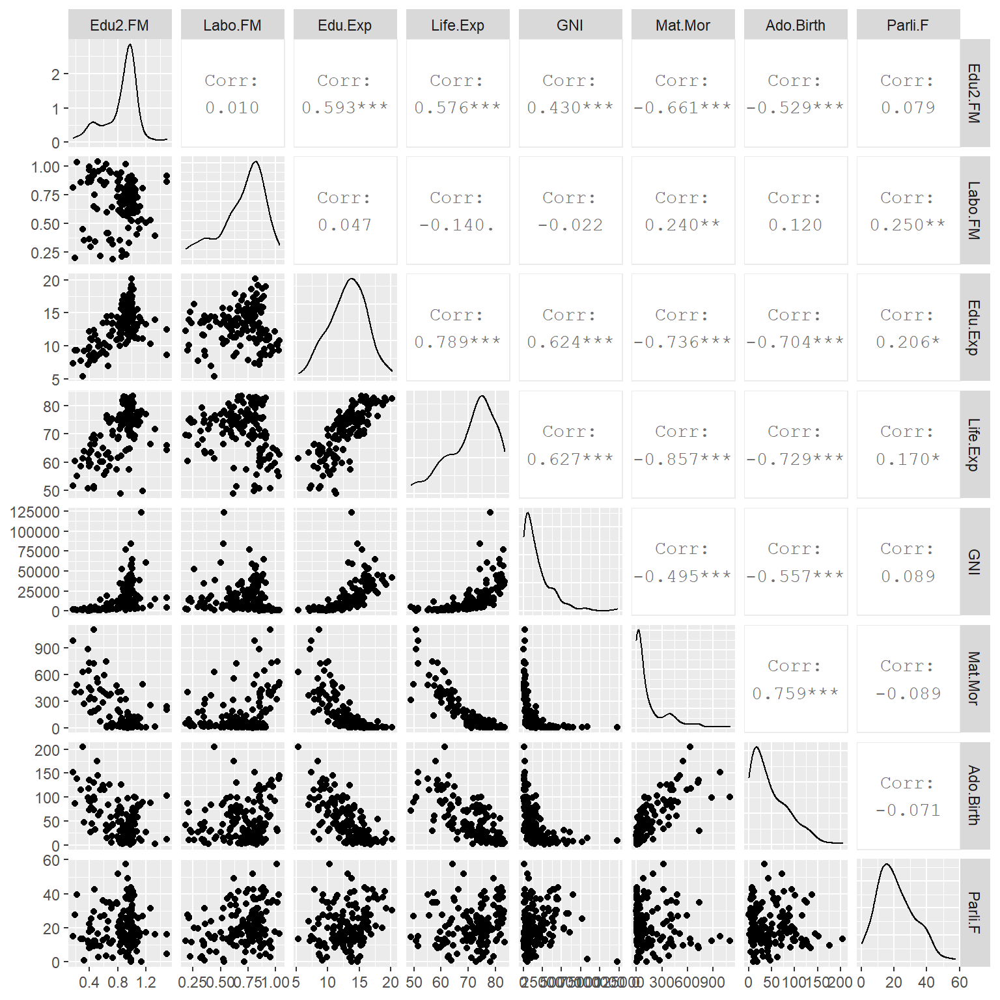
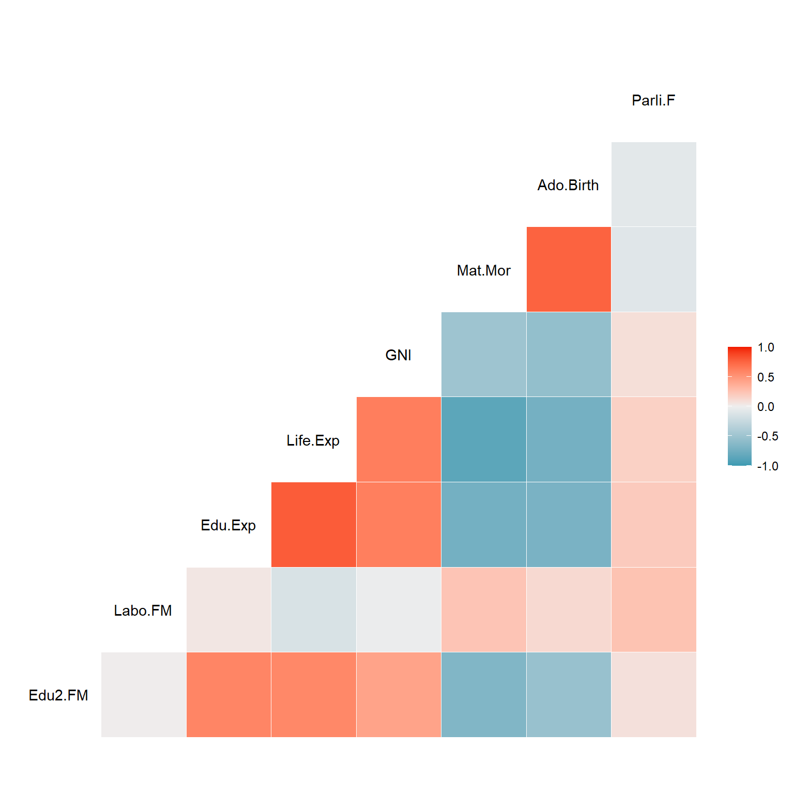
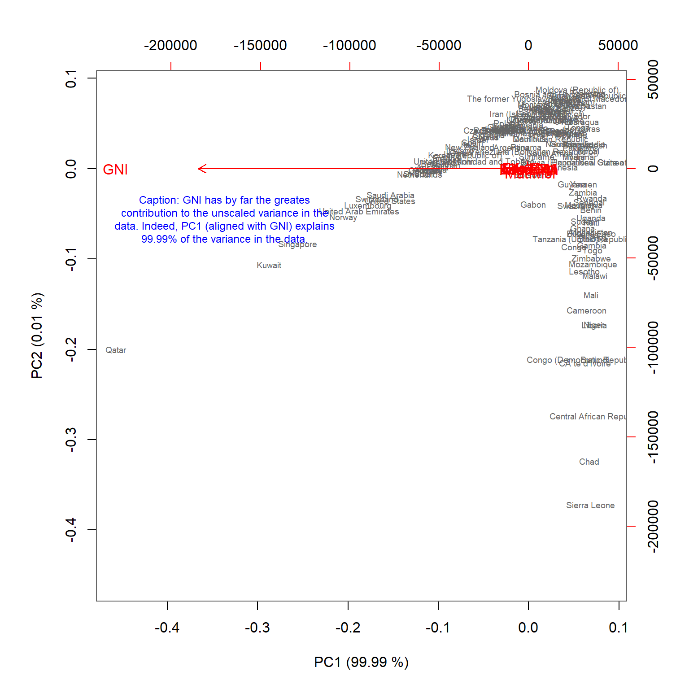
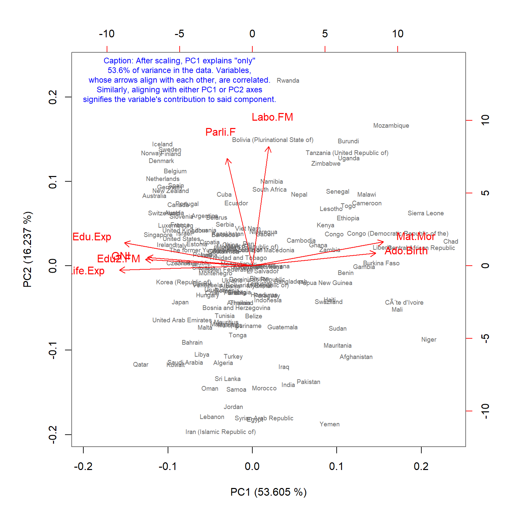
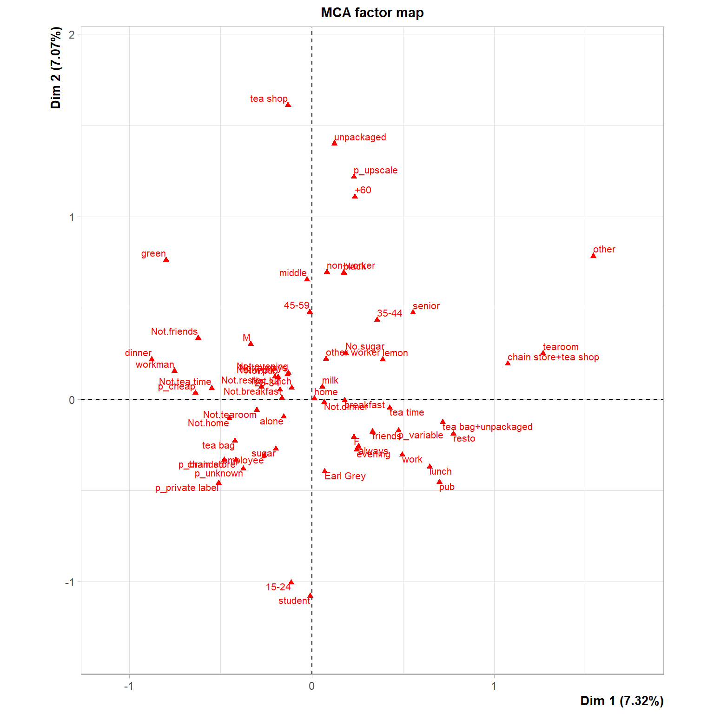
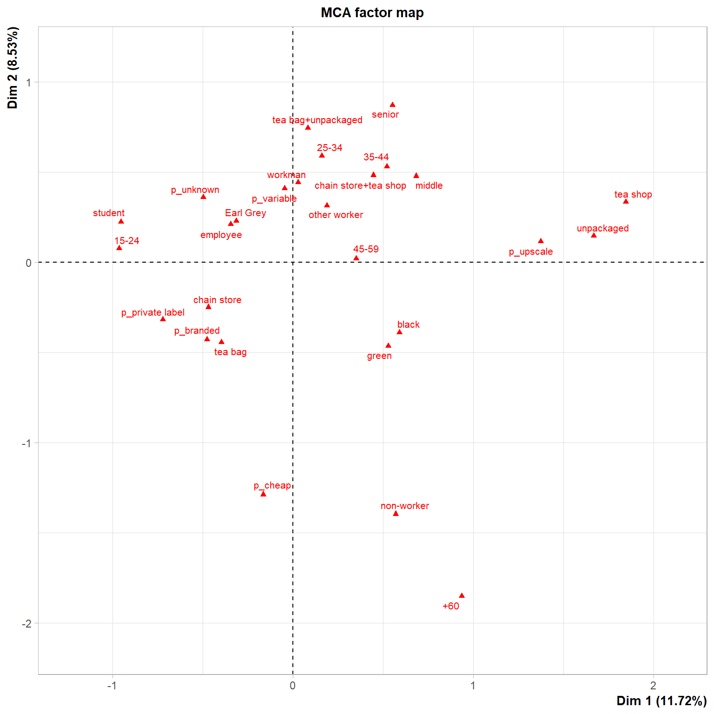

The data, as well as, its structure, dimensions, and origins have been described previously in here.
#Read in the data
human <- read.table("http://s3.amazonaws.com/assets.datacamp.com/production/course_2218/datasets/human2.txt", stringsAsFactors = TRUE, sep = ",",header = TRUE)
library(gtsummary)
#Print out a summary table of all variables
my_table <- tbl_summary(human,
digits = all_continuous() ~ 2,
type = all_continuous() ~ "continuous2",
statistic = list(all_continuous() ~ c("{mean} ({sd})",
"{median} ({p25}, {p75})",
"{min}, {max}")))
#Add some missing elements to the table and print it out
my_table %>% bold_labels()| Characteristic | N = 155 |
|---|---|
| Edu2.FM | |
| Mean (SD) | 0.85 (0.24) |
| Median (IQR) | 0.94 (0.73, 1.00) |
| Range | 0.17, 1.50 |
| Labo.FM | |
| Mean (SD) | 0.71 (0.20) |
| Median (IQR) | 0.75 (0.60, 0.85) |
| Range | 0.19, 1.04 |
| Edu.Exp | |
| Mean (SD) | 13.18 (2.84) |
| Median (IQR) | 13.50 (11.25, 15.20) |
| Range | 5.40, 20.20 |
| Life.Exp | |
| Mean (SD) | 71.65 (8.33) |
| Median (IQR) | 74.20 (66.30, 77.25) |
| Range | 49.00, 83.50 |
| GNI | |
| Mean (SD) | 17,627.90 (18,543.85) |
| Median (IQR) | 12,040.00 (4,197.50, 24,512.00) |
| Range | 581.00, 123,124.00 |
| Mat.Mor | |
| Mean (SD) | 149.08 (211.79) |
| Median (IQR) | 49.00 (11.50, 190.00) |
| Range | 1.00, 1,100.00 |
| Ado.Birth | |
| Mean (SD) | 47.16 (41.11) |
| Median (IQR) | 33.60 (12.65, 71.95) |
| Range | 0.60, 204.80 |
| Parli.F | |
| Mean (SD) | 20.91 (11.49) |
| Median (IQR) | 19.30 (12.40, 27.95) |
| Range | 0.00, 57.50 |
All variables are continuous and numerical. The scales and numerical variance of the variables vary wildly, which means that we absolutely should scale the data before running PCA.
The data show mostly fairly symmetrical distributions based on the median and mean values. Some values like GNI, Ado.Birth and Mat.Mor are somewhat skewed, although their standard deviations, too, are quite large.
library(GGally)
#library(plotly)
#Print a scatter plot matrix
ggpairs(data = human)
#Correlation plot
ggcorr(data = human)
Visual inspection confirms our numerical observations of the distributions’ skewness for some variables. Also, quite strong correlation can be seen in the data for some variables.
For example, there is considerable negative correlation for Mat.Mor vs GNI, Life.Exp, Edu.Exp, and Edu2.FM. Similar negative correlations exist for Ado.Birth.
Ado.Birth and Mat.Mor, as well as, Edu.Exp and Life.Exp have a strong (>0.7) positive correlation.
Not all correlation seen in the data is necessarily linear: for example, GNI and Edu.Exp demonstrate a seemingly non-linear correlation. Moreover, there is heteroscedasticity in the data (for example GNI vs Edu.Exp) which would suggest that perhaps some variables in the data would benefit from log-transform before running the PCA. Alas, such considerations were not instructed for this assignment.
Time for some principal component analysis. First, lets run the analysis on unscaled data.
#Do PCA using SVD
my_unscaled_pca <- prcomp(human)
my_unscaled_pca## Standard deviations (1, .., p=8):
## [1] 1.854416e+04 1.855219e+02 2.518701e+01 1.145441e+01 3.766241e+00
## [6] 1.565912e+00 1.912052e-01 1.591112e-01
##
## Rotation (n x k) = (8 x 8):
## PC1 PC2 PC3 PC4 PC5
## Edu2.FM -5.607472e-06 0.0006713951 -3.412027e-05 -2.736326e-04 -0.0022935252
## Labo.FM 2.331945e-07 -0.0002819357 5.302884e-04 -4.692578e-03 0.0022190154
## Edu.Exp -9.562910e-05 0.0075529759 1.427664e-02 -3.313505e-02 0.1431180282
## Life.Exp -2.815823e-04 0.0283150248 1.294971e-02 -6.752684e-02 0.9865644425
## GNI -9.999832e-01 -0.0057723054 -5.156742e-04 4.932889e-05 -0.0001135863
## Mat.Mor 5.655734e-03 -0.9916320120 1.260302e-01 -6.100534e-03 0.0266373214
## Ado.Birth 1.233961e-03 -0.1255502723 -9.918113e-01 5.301595e-03 0.0188618600
## Parli.F -5.526460e-05 0.0032317269 -7.398331e-03 -9.971232e-01 -0.0716401914
## PC6 PC7 PC8
## Edu2.FM 2.180183e-02 6.998623e-01 7.139410e-01
## Labo.FM 3.264423e-02 7.132267e-01 -7.001533e-01
## Edu.Exp 9.882477e-01 -3.826887e-02 7.776451e-03
## Life.Exp -1.453515e-01 5.380452e-03 2.281723e-03
## GNI -2.711698e-05 -8.075191e-07 -1.176762e-06
## Mat.Mor 1.695203e-03 1.355518e-04 8.371934e-04
## Ado.Birth 1.273198e-02 -8.641234e-05 -1.707885e-04
## Parli.F -2.309896e-02 -2.642548e-03 2.680113e-03summary(my_unscaled_pca)## Importance of components:
## PC1 PC2 PC3 PC4 PC5 PC6 PC7 PC8
## Standard deviation 1.854e+04 185.5219 25.19 11.45 3.766 1.566 0.1912 0.1591
## Proportion of Variance 9.999e-01 0.0001 0.00 0.00 0.000 0.000 0.0000 0.0000
## Cumulative Proportion 9.999e-01 1.0000 1.00 1.00 1.000 1.000 1.0000 1.0000#Print calculate the PC labels with the percentages of variance for the biplots
variance_precentage <- round(100*summary(my_unscaled_pca)$importance[2, ], digits = 3)
variance_precentage <- paste0(names(variance_precentage), " (", variance_precentage, " %)")
#Print the biplot as requested
biplot(my_unscaled_pca, cex = c(0.6, 1), col = c("grey40", "red"), xlab = variance_precentage[1], ylab = variance_precentage[2])
#What on earth is meant by "captions ... in your plots" in the instructions
#is lost on me but here's how you can add (confusing) text to your plot:
text(x=-170000,y=-28000, labels = paste0("Caption: GNI has by far the greates\n",
"contribution to the unscaled variance in the\n",
"data. Indeed, PC1 (aligned with GNI) explains\n",
"99.99% of the variance in the data."), cex = 0.75,col="blue")
#Scale the data
human_scaled <- scale(human)
#Do PCA using SVD
my_scaled_pca <- prcomp(human_scaled)
my_scaled_pca## Standard deviations (1, .., p=8):
## [1] 2.0708380 1.1397204 0.8750485 0.7788630 0.6619563 0.5363061 0.4589994
## [8] 0.3222406
##
## Rotation (n x k) = (8 x 8):
## PC1 PC2 PC3 PC4 PC5
## Edu2.FM -0.35664370 0.03796058 -0.24223089 0.62678110 -0.5983585
## Labo.FM 0.05457785 0.72432726 -0.58428770 0.06199424 0.2625067
## Edu.Exp -0.42766720 0.13940571 -0.07340270 -0.07020294 0.1659678
## Life.Exp -0.44372240 -0.02530473 0.10991305 -0.05834819 0.1628935
## GNI -0.35048295 0.05060876 -0.20168779 -0.72727675 -0.4950306
## Mat.Mor 0.43697098 0.14508727 -0.12522539 -0.25170614 -0.1800657
## Ado.Birth 0.41126010 0.07708468 0.01968243 0.04986763 -0.4672068
## Parli.F -0.08438558 0.65136866 0.72506309 0.01396293 -0.1523699
## PC6 PC7 PC8
## Edu2.FM 0.17713316 0.05773644 0.16459453
## Labo.FM -0.03500707 -0.22729927 -0.07304568
## Edu.Exp -0.38606919 0.77962966 -0.05415984
## Life.Exp -0.42242796 -0.43406432 0.62737008
## GNI 0.11120305 -0.13711838 -0.16961173
## Mat.Mor 0.17370039 0.35380306 0.72193946
## Ado.Birth -0.76056557 -0.06897064 -0.14335186
## Parli.F 0.13749772 0.00568387 -0.02306476summary(my_scaled_pca)## Importance of components:
## PC1 PC2 PC3 PC4 PC5 PC6 PC7
## Standard deviation 2.0708 1.1397 0.87505 0.77886 0.66196 0.53631 0.45900
## Proportion of Variance 0.5361 0.1624 0.09571 0.07583 0.05477 0.03595 0.02634
## Cumulative Proportion 0.5361 0.6984 0.79413 0.86996 0.92473 0.96069 0.98702
## PC8
## Standard deviation 0.32224
## Proportion of Variance 0.01298
## Cumulative Proportion 1.00000#Print calculate the PC labels with the percentages of variance for the biplots
variance_precentage <- round(100*summary(my_scaled_pca)$importance[2, ], digits = 3)
variance_precentage <- paste0(names(variance_precentage), " (", variance_precentage, " %)")
#Print the biplot as requested
biplot(my_scaled_pca, cex = c(0.6, 1), col = c("grey40", "red"), xlab = variance_precentage[1], ylab = variance_precentage[2])
text(x=-5,y=13, labels = paste0("Caption: After scaling, PC1 explains only\n",
"53.6% of variance in the data. Variables,\n",
"whose arrows align with each other, are also correlated.\n",
"Similarly, aligning with either PC1 or PC2 axes\n",
"signifies the variable's contribution to said component.\n"), cex = 0.75,col="blue")
In laymans terms, principal componen analysis (PCA) is a method whereby a maximum of the variance in multivariate data is distilled to as few degrees of freedom (or principal components) as possible using a linear function. In visual terms, a principal component can be described as a multivariate axis through the data. All observations are then projected on to this axis. Each principal component is derived by aligning this “axis” (or principal component) with the dimension of greatest multivariate variance in the data. This variance (or dimension) is then “removed” from the data for the calculation of subsequent principal components (i.e. the principal components are at a right angle to each other). Thus, after the first principal component, each subsequent principal component is able to describe only as much or less variance than the previous component. In the theoretical case of perfectly multivariate normal data, each principal component will be equally important for describing the data. The number of principal components is always as great as the degrees of freedom (=number of variables) in the data – otherwise the PCA would not be able to describe all variance in the data.
Since variance can differ wildly for different variables, scaling the data is often necessary make better sense of the results. For example, if one variable in the data has much higher variance compared to other variables the first principal component will always align with this variable. This result may be nonsensical, especially if this variable simply has a larger scale or higher measurement noise which explains the high variance. However, if the intention is to simply identify the components (or axis) with the highest variance in the data, then, scaling is counter intuitive.
It should be noted that scaling the data essentially assigns “equal importance” for each variable in the PCA. Depending on the above considerations this may or may not make sense in your particular use case.
In the case of our example data, the variance of GNI is numerically far greater than for any other variable in the data. Thus, the before scaling PC1 almost entirely aligns with GNI and, in this analysis, explains 99.99% of variance in the data. This results makes no sense in our case since the variables are measured at completely different scales.
After scaling, GNI has lost its disproportinately large significance, as can clearly be seen from the biplot.
As discussed above PC1 in the latter biplot is the multivariate dimeansion/axis in the scaled data where most of the data’s variance (53.6% to be exact) aligns. Thus, most of the variance in our data with 8 degrees of freedom can be described with only a single dimension. For PC1, the most significant variable was Life.Exp with Mat.Mor a close second. We can also assess correlations (since we scaled the data) in the data by looking at the sign and magnitude of the PC coefficients (i.e. the arrows aligning in the biplot). Opposite facing arrows imply negative correlations.
The second principal component is calculated after the variance described by PC1 is “substracted” from the data. Thus, PC2 is able to predict less of the multivariate variance in the data (16.2% to be exact) Also, as in the graph, PC2 is mathematically at a right angle to PC1 and thus they are wholly uncorrelated. The interpretation of the variables significance for PC2 is similar to PC1.
To clarify the significance of scaling the data before PCA, let’s do a practical thought exercise:
Let’s say that we have a database face images and we wish to know which features in the image optimally tell apart the faces from each individual so as to make predictions of identity on any subsequent face images. For simplicity’s sake, let’s assume we can measure only three features from the images: X1, X2, and X3. These variables may or may not have different variance and/or be correlated. Additionally they may have different repeatability.
Now, let’s further assume that computing these variables for a single face image is time consuming and, even more importantly, comparing them through our vast database of face images is extremely resource intensive. Thus, we wish to find only a single dimensional combination/reduction of these variables that can best be used to distinguish one face from another. For this purpose of dimensionality reduction we wish to use PCA.
The question is: should we or should we not scale the variables X1, X2, and X3?
The correct answer is: it depends.
For example, let’s assume you know from previous research that these features are of roughly equal importance to telling apart the In such a case, standardizing/scaling the data makes perfect sense.
As an opposite example, let’s assume that you know the uncertainty of measuring X1, X2, and X3 from double images of same individuals. Now if you have adjusted X1, X2, and X3 according to this uncertainty (for example, by dividing with intra-individual standard deviation of each variable) before running PCA, you should absolutely not scale these variables since you’re interested in catching the maximum amount of variance in the data with a single linear variable.
Let’s do an example analysis of the above face recognition dilemma with simulated data:
library(MASS)
library(psych)
#First let's create a table with two highly correlated variables and
#one completely non-correlated variable with significantly higher variance
#Covariance matrix of simulated data:
# X1: X2: X3:
#X1: 1 1 0
#X2: 1 1 0
#X3: 0 0 16
#
# X1 and X2 will show sd of 1 and are have positive covariance
# X3 has sd of 4 and shows no covariance with either X1 or X2
#
# Matrix values as vector: c(1,1,0,1,1,0,0,0,10)
corr_matrix <- matrix(c(1, 1, 0, 1, 1, 0, 0, 0, 10), nrow = 3, ncol = 3)
#Means of zero for all variables
var_means <- c(0, 0, 0)
#Generate the multivariate normal data table:
test_data <- mvrnorm(n = 10000, mu = var_means, Sigma = corr_matrix, empirical = TRUE)
#Describe the simulated data:
describe(test_data)## vars n mean sd median trimmed mad min max range skew kurtosis
## X1 1 10000 0 1.00 0 0.00 1.01 -3.62 3.86 7.47 -0.01 -0.05
## X2 2 10000 0 1.00 0 0.00 1.01 -3.62 3.86 7.47 -0.01 -0.05
## X3 3 10000 0 3.16 0 -0.01 3.19 -11.87 11.95 23.82 0.02 -0.05
## se
## X1 0.01
## X2 0.01
## X3 0.03#Do the pca on the non-scaled data
my_simulated_pca <- prcomp(test_data)
#Print out
my_simulated_pca## Standard deviations (1, .., p=3):
## [1] 3.162278e+00 1.414214e+00 3.332001e-08
##
## Rotation (n x k) = (3 x 3):
## PC1 PC2 PC3
## [1,] 0.000000e+00 -7.071068e-01 -7.071068e-01
## [2,] -2.954859e-17 -7.071068e-01 7.071068e-01
## [3,] -1.000000e+00 2.089401e-17 -2.089401e-17summary(my_simulated_pca)## Importance of components:
## PC1 PC2 PC3
## Standard deviation 3.1623 1.4142 3.332e-08
## Proportion of Variance 0.8333 0.1667 0.000e+00
## Cumulative Proportion 0.8333 1.0000 1.000e+00#Now do the pca after scaling data:
my_simulated_pca <- prcomp(scale(test_data))
#Print out
my_simulated_pca## Standard deviations (1, .., p=3):
## [1] 1.414214e+00 1.000000e+00 3.332001e-08
##
## Rotation (n x k) = (3 x 3):
## PC1 PC2 PC3
## [1,] -7.071068e-01 -1.942890e-16 7.071068e-01
## [2,] -7.071068e-01 -2.631457e-16 -7.071068e-01
## [3,] 3.234552e-16 -1.000000e+00 4.589946e-17summary(my_simulated_pca)## Importance of components:
## PC1 PC2 PC3
## Standard deviation 1.4142 1.0000 3.332e-08
## Proportion of Variance 0.6667 0.3333 0.000e+00
## Cumulative Proportion 0.6667 1.0000 1.000e+00As can be seen from the example analysis, the results are completely different before and after scaling. Before scaling, X3 alone explains the most variance in the data. However, if each variable is assigned equal importance (i.e. variables are scaled before PCA), the combination of X1 and X2 (PC1 coefficients of -0.7 for both) is the best combination of the available variables for telling the “individuals” apart (= maximal variance on a single dimension).
#Let's make our reports reproducible
library(FactoMineR)
#Load the dataset
data(tea)
#Explore the structure and dimensions.
str(tea)## 'data.frame': 300 obs. of 36 variables:
## $ breakfast : Factor w/ 2 levels "breakfast","Not.breakfast": 1 1 2 2 1 2 1 2 1 1 ...
## $ tea.time : Factor w/ 2 levels "Not.tea time",..: 1 1 2 1 1 1 2 2 2 1 ...
## $ evening : Factor w/ 2 levels "evening","Not.evening": 2 2 1 2 1 2 2 1 2 1 ...
## $ lunch : Factor w/ 2 levels "lunch","Not.lunch": 2 2 2 2 2 2 2 2 2 2 ...
## $ dinner : Factor w/ 2 levels "dinner","Not.dinner": 2 2 1 1 2 1 2 2 2 2 ...
## $ always : Factor w/ 2 levels "always","Not.always": 2 2 2 2 1 2 2 2 2 2 ...
## $ home : Factor w/ 2 levels "home","Not.home": 1 1 1 1 1 1 1 1 1 1 ...
## $ work : Factor w/ 2 levels "Not.work","work": 1 1 2 1 1 1 1 1 1 1 ...
## $ tearoom : Factor w/ 2 levels "Not.tearoom",..: 1 1 1 1 1 1 1 1 1 2 ...
## $ friends : Factor w/ 2 levels "friends","Not.friends": 2 2 1 2 2 2 1 2 2 2 ...
## $ resto : Factor w/ 2 levels "Not.resto","resto": 1 1 2 1 1 1 1 1 1 1 ...
## $ pub : Factor w/ 2 levels "Not.pub","pub": 1 1 1 1 1 1 1 1 1 1 ...
## $ Tea : Factor w/ 3 levels "black","Earl Grey",..: 1 1 2 2 2 2 2 1 2 1 ...
## $ How : Factor w/ 4 levels "alone","lemon",..: 1 3 1 1 1 1 1 3 3 1 ...
## $ sugar : Factor w/ 2 levels "No.sugar","sugar": 2 1 1 2 1 1 1 1 1 1 ...
## $ how : Factor w/ 3 levels "tea bag","tea bag+unpackaged",..: 1 1 1 1 1 1 1 1 2 2 ...
## $ where : Factor w/ 3 levels "chain store",..: 1 1 1 1 1 1 1 1 2 2 ...
## $ price : Factor w/ 6 levels "p_branded","p_cheap",..: 4 6 6 6 6 3 6 6 5 5 ...
## $ age : int 39 45 47 23 48 21 37 36 40 37 ...
## $ sex : Factor w/ 2 levels "F","M": 2 1 1 2 2 2 2 1 2 2 ...
## $ SPC : Factor w/ 7 levels "employee","middle",..: 2 2 4 6 1 6 5 2 5 5 ...
## $ Sport : Factor w/ 2 levels "Not.sportsman",..: 2 2 2 1 2 2 2 2 2 1 ...
## $ age_Q : Factor w/ 5 levels "15-24","25-34",..: 3 4 4 1 4 1 3 3 3 3 ...
## $ frequency : Factor w/ 4 levels "1/day","1 to 2/week",..: 1 1 3 1 3 1 4 2 3 3 ...
## $ escape.exoticism: Factor w/ 2 levels "escape-exoticism",..: 2 1 2 1 1 2 2 2 2 2 ...
## $ spirituality : Factor w/ 2 levels "Not.spirituality",..: 1 1 1 2 2 1 1 1 1 1 ...
## $ healthy : Factor w/ 2 levels "healthy","Not.healthy": 1 1 1 1 2 1 1 1 2 1 ...
## $ diuretic : Factor w/ 2 levels "diuretic","Not.diuretic": 2 1 1 2 1 2 2 2 2 1 ...
## $ friendliness : Factor w/ 2 levels "friendliness",..: 2 2 1 2 1 2 2 1 2 1 ...
## $ iron.absorption : Factor w/ 2 levels "iron absorption",..: 2 2 2 2 2 2 2 2 2 2 ...
## $ feminine : Factor w/ 2 levels "feminine","Not.feminine": 2 2 2 2 2 2 2 1 2 2 ...
## $ sophisticated : Factor w/ 2 levels "Not.sophisticated",..: 1 1 1 2 1 1 1 2 2 1 ...
## $ slimming : Factor w/ 2 levels "No.slimming",..: 1 1 1 1 1 1 1 1 1 1 ...
## $ exciting : Factor w/ 2 levels "exciting","No.exciting": 2 1 2 2 2 2 2 2 2 2 ...
## $ relaxing : Factor w/ 2 levels "No.relaxing",..: 1 1 2 2 2 2 2 2 2 2 ...
## $ effect.on.health: Factor w/ 2 levels "effect on health",..: 2 2 2 2 2 2 2 2 2 2 ...Frankly, meaningful visual exploration of the dataset with 35 categorical variables, most of which have only 2 levels, is challenging (and a bit too much for a contingency table). Infact, MCA can be used to perhaps simplify this issue but we’ll get back to this later…
In the meanwhile, a table instead of a plot, IMHO, is the most meaningful option for displaying the data.
#Print out a table of all variables
my_table <- tbl_summary(tea,
digits = all_continuous() ~ 2,
type = all_continuous() ~ "continuous2",
statistic = list(all_continuous() ~ c("{mean} ({sd})",
"{median} ({p25}, {p75})",
"{min}, {max}"),
all_categorical() ~ "{n} / {N} ({p}%)"))
#Add some missing elements to the table and print it out
my_table %>% bold_labels()| Characteristic | N = 300 |
|---|---|
| breakfast | |
| breakfast | 144 / 300 (48%) |
| Not.breakfast | 156 / 300 (52%) |
| tea.time | |
| Not.tea time | 131 / 300 (44%) |
| tea time | 169 / 300 (56%) |
| evening | |
| evening | 103 / 300 (34%) |
| Not.evening | 197 / 300 (66%) |
| lunch | |
| lunch | 44 / 300 (15%) |
| Not.lunch | 256 / 300 (85%) |
| dinner | |
| dinner | 21 / 300 (7.0%) |
| Not.dinner | 279 / 300 (93%) |
| always | |
| always | 103 / 300 (34%) |
| Not.always | 197 / 300 (66%) |
| home | |
| home | 291 / 300 (97%) |
| Not.home | 9 / 300 (3.0%) |
| work | |
| Not.work | 213 / 300 (71%) |
| work | 87 / 300 (29%) |
| tearoom | |
| Not.tearoom | 242 / 300 (81%) |
| tearoom | 58 / 300 (19%) |
| friends | |
| friends | 196 / 300 (65%) |
| Not.friends | 104 / 300 (35%) |
| resto | |
| Not.resto | 221 / 300 (74%) |
| resto | 79 / 300 (26%) |
| pub | |
| Not.pub | 237 / 300 (79%) |
| pub | 63 / 300 (21%) |
| Tea | |
| black | 74 / 300 (25%) |
| Earl Grey | 193 / 300 (64%) |
| green | 33 / 300 (11%) |
| How | |
| alone | 195 / 300 (65%) |
| lemon | 33 / 300 (11%) |
| milk | 63 / 300 (21%) |
| other | 9 / 300 (3.0%) |
| sugar | |
| No.sugar | 155 / 300 (52%) |
| sugar | 145 / 300 (48%) |
| how | |
| tea bag | 170 / 300 (57%) |
| tea bag+unpackaged | 94 / 300 (31%) |
| unpackaged | 36 / 300 (12%) |
| where | |
| chain store | 192 / 300 (64%) |
| chain store+tea shop | 78 / 300 (26%) |
| tea shop | 30 / 300 (10%) |
| price | |
| p_branded | 95 / 300 (32%) |
| p_cheap | 7 / 300 (2.3%) |
| p_private label | 21 / 300 (7.0%) |
| p_unknown | 12 / 300 (4.0%) |
| p_upscale | 53 / 300 (18%) |
| p_variable | 112 / 300 (37%) |
| age | |
| Mean (SD) | 37.05 (16.87) |
| Median (IQR) | 32.00 (23.00, 48.00) |
| Range | 15.00, 90.00 |
| sex | |
| F | 178 / 300 (59%) |
| M | 122 / 300 (41%) |
| SPC | |
| employee | 59 / 300 (20%) |
| middle | 40 / 300 (13%) |
| non-worker | 64 / 300 (21%) |
| other worker | 20 / 300 (6.7%) |
| senior | 35 / 300 (12%) |
| student | 70 / 300 (23%) |
| workman | 12 / 300 (4.0%) |
| Sport | |
| Not.sportsman | 121 / 300 (40%) |
| sportsman | 179 / 300 (60%) |
| age_Q | |
| 15-24 | 92 / 300 (31%) |
| 25-34 | 69 / 300 (23%) |
| 35-44 | 40 / 300 (13%) |
| 45-59 | 61 / 300 (20%) |
| +60 | 38 / 300 (13%) |
| frequency | |
| 1/day | 95 / 300 (32%) |
| 1 to 2/week | 44 / 300 (15%) |
| +2/day | 127 / 300 (42%) |
| 3 to 6/week | 34 / 300 (11%) |
| escape.exoticism | |
| escape-exoticism | 142 / 300 (47%) |
| Not.escape-exoticism | 158 / 300 (53%) |
| spirituality | |
| Not.spirituality | 206 / 300 (69%) |
| spirituality | 94 / 300 (31%) |
| healthy | |
| healthy | 210 / 300 (70%) |
| Not.healthy | 90 / 300 (30%) |
| diuretic | |
| diuretic | 174 / 300 (58%) |
| Not.diuretic | 126 / 300 (42%) |
| friendliness | |
| friendliness | 242 / 300 (81%) |
| Not.friendliness | 58 / 300 (19%) |
| iron.absorption | |
| iron absorption | 31 / 300 (10%) |
| Not.iron absorption | 269 / 300 (90%) |
| feminine | |
| feminine | 129 / 300 (43%) |
| Not.feminine | 171 / 300 (57%) |
| sophisticated | |
| Not.sophisticated | 85 / 300 (28%) |
| sophisticated | 215 / 300 (72%) |
| slimming | |
| No.slimming | 255 / 300 (85%) |
| slimming | 45 / 300 (15%) |
| exciting | |
| exciting | 116 / 300 (39%) |
| No.exciting | 184 / 300 (61%) |
| relaxing | |
| No.relaxing | 113 / 300 (38%) |
| relaxing | 187 / 300 (62%) |
| effect.on.health | |
| effect on health | 66 / 300 (22%) |
| No.effect on health | 234 / 300 (78%) |
Nothing much to interpret here. Frequencies and proportions are printed as requested.
So what are we running a multiple correspondence analysis for? MCA can be viewed as analogous to PCA; however, it is a generalization for catogorical variables. Continuous variables can be projected onto the dimensions (analogous to PCA principal components) created by the MCA. Thus, even continues variables can be contrasted with different patterns of categorical variables.
As such, the use cases of MCA and, also, analogous to use cases of PCA; reducing dimensions in a multivariate categorical data to as few significant degrees of freedom (or in this case patterns in the categorical variables) as possible. Similar to the variable coefficients of principal components in PCA we can use the DMA to also study associations with variable categories.
For forming a valid research question, let’s say we’re working at a tea shop and we wish to enhance our understanding of our clientele. More specifically we wish to indentify possible patterns in habits of tea consumption.
To identify possible patterns in tea consumption habits we include the first 18 variables (questions related to tea consumption) and demographic factors: sex, SPC, and age_q into our MCA analysis.
#Generate drop unnecessary variables:
tea2 <- tea[c(1:18, 20:21, 23)]
#Let's do the MCA analysis.
my_mca <- MCA(tea2, graph = FALSE)
#Let's print a summary of our MCA
summary(my_mca)##
## Call:
## MCA(X = tea2, graph = FALSE)
##
##
## Eigenvalues
## Dim.1 Dim.2 Dim.3 Dim.4 Dim.5 Dim.6 Dim.7
## Variance 0.133 0.128 0.101 0.091 0.079 0.070 0.068
## % of var. 7.323 7.074 5.596 5.037 4.380 3.859 3.736
## Cumulative % of var. 7.323 14.397 19.993 25.031 29.411 33.269 37.005
## Dim.8 Dim.9 Dim.10 Dim.11 Dim.12 Dim.13 Dim.14
## Variance 0.064 0.061 0.061 0.057 0.055 0.054 0.052
## % of var. 3.544 3.391 3.348 3.152 3.036 2.987 2.871
## Cumulative % of var. 40.549 43.940 47.288 50.441 53.477 56.464 59.335
## Dim.15 Dim.16 Dim.17 Dim.18 Dim.19 Dim.20 Dim.21
## Variance 0.050 0.049 0.045 0.044 0.044 0.043 0.040
## % of var. 2.760 2.719 2.488 2.445 2.409 2.370 2.198
## Cumulative % of var. 62.095 64.814 67.302 69.746 72.156 74.526 76.724
## Dim.22 Dim.23 Dim.24 Dim.25 Dim.26 Dim.27 Dim.28
## Variance 0.037 0.035 0.034 0.033 0.032 0.029 0.028
## % of var. 2.053 1.937 1.864 1.815 1.766 1.592 1.538
## Cumulative % of var. 78.777 80.714 82.577 84.393 86.158 87.750 89.288
## Dim.29 Dim.30 Dim.31 Dim.32 Dim.33 Dim.34 Dim.35
## Variance 0.026 0.025 0.025 0.022 0.020 0.020 0.018
## % of var. 1.461 1.405 1.356 1.196 1.113 1.099 0.969
## Cumulative % of var. 90.749 92.154 93.510 94.706 95.818 96.918 97.887
## Dim.36 Dim.37 Dim.38
## Variance 0.014 0.013 0.011
## % of var. 0.793 0.707 0.613
## Cumulative % of var. 98.680 99.387 100.000
##
## Individuals (the 10 first)
## Dim.1 ctr cos2 Dim.2 ctr cos2 Dim.3 ctr
## 1 | -0.478 0.574 0.093 | 0.233 0.141 0.022 | 0.024 0.002
## 2 | -0.263 0.174 0.051 | 0.290 0.219 0.062 | -0.313 0.323
## 3 | 0.071 0.013 0.002 | -0.131 0.044 0.008 | 0.168 0.093
## 4 | -0.608 0.930 0.242 | -0.274 0.195 0.049 | 0.163 0.087
## 5 | -0.310 0.242 0.084 | -0.046 0.005 0.002 | 0.073 0.017
## 6 | -0.687 1.186 0.227 | -0.242 0.153 0.028 | 0.053 0.009
## 7 | -0.002 0.000 0.000 | 0.079 0.016 0.005 | -0.032 0.003
## 8 | -0.083 0.017 0.005 | 0.217 0.122 0.031 | -0.228 0.171
## 9 | 0.213 0.114 0.026 | 0.438 0.500 0.110 | 0.076 0.019
## 10 | 0.326 0.267 0.053 | 0.561 0.820 0.158 | 0.188 0.117
## cos2
## 1 0.000 |
## 2 0.072 |
## 3 0.013 |
## 4 0.017 |
## 5 0.005 |
## 6 0.001 |
## 7 0.001 |
## 8 0.034 |
## 9 0.003 |
## 10 0.018 |
##
## Categories (the 10 first)
## Dim.1 ctr cos2 v.test Dim.2 ctr cos2 v.test
## breakfast | 0.179 0.550 0.029 2.966 | -0.007 0.001 0.000 -0.111 |
## Not.breakfast | -0.165 0.507 0.029 -2.966 | 0.006 0.001 0.000 0.111 |
## Not.tea time | -0.548 4.718 0.233 -8.348 | 0.059 0.057 0.003 0.900 |
## tea time | 0.425 3.657 0.233 8.348 | -0.046 0.044 0.003 -0.900 |
## evening | 0.245 0.738 0.031 3.057 | -0.275 0.965 0.040 -3.437 |
## Not.evening | -0.128 0.386 0.031 -3.057 | 0.144 0.505 0.040 3.437 |
## lunch | 0.645 2.192 0.071 4.623 | -0.371 0.749 0.024 -2.656 |
## Not.lunch | -0.111 0.377 0.071 -4.623 | 0.064 0.129 0.024 2.656 |
## dinner | -0.877 1.935 0.058 -4.160 | 0.218 0.124 0.004 1.034 |
## Not.dinner | 0.066 0.146 0.058 4.160 | -0.016 0.009 0.004 -1.034 |
## Dim.3 ctr cos2 v.test
## breakfast -0.126 0.356 0.015 -2.088 |
## Not.breakfast 0.116 0.329 0.015 2.088 |
## Not.tea time 0.284 1.656 0.062 4.323 |
## tea time -0.220 1.283 0.062 -4.323 |
## evening 0.344 1.906 0.062 4.295 |
## Not.evening -0.180 0.996 0.062 -4.295 |
## lunch -0.105 0.076 0.002 -0.755 |
## Not.lunch 0.018 0.013 0.002 0.755 |
## dinner 1.046 3.603 0.082 4.963 |
## Not.dinner -0.079 0.271 0.082 -4.963 |
##
## Categorical variables (eta2)
## Dim.1 Dim.2 Dim.3
## breakfast | 0.029 0.000 0.015 |
## tea.time | 0.233 0.003 0.062 |
## evening | 0.031 0.040 0.062 |
## lunch | 0.071 0.024 0.002 |
## dinner | 0.058 0.004 0.082 |
## always | 0.034 0.035 0.066 |
## home | 0.006 0.000 0.026 |
## work | 0.101 0.038 0.078 |
## tearoom | 0.384 0.015 0.000 |
## friends | 0.207 0.060 0.015 |#Print a plot of the first two dimensions:
plot(my_mca, invisible = c("ind"), cex = 0.7)
First off, looking at our eigenvalues table, our data seems quite homogenous. This is reflected by the fact that the first two dimensions of the MCA are only able to explain 15.6% of the total variance in the data. In absolute terms this is not much more than what we would expect in random data for each dimension (100% / 33 dimensions = about 3%). However, in relative terms this is still quite a bit better.
The tables for categories and individuals can be interpreted in identical fashion: the first column is the row’s contribution (or coordinates) for each dimension. The second column is percentage of contribution to the variance of the dimension. Third is cos2, i.e. the squared correlation of the row to the dimension. And finally v.test is a normalized statistic for the rows coordinate on the dimension. Had we used supplementary variables in our analysis, a similar table would have been printed for them.
From the MCA factor plot we would be tempted to make following deductions: 60+ individuals tend to drink our upscale (unpackaged) tea (at a teashop). Similarly, (a probably correct) inference is that 15-24 individuals are more often students. But…….
HOWEVER, interpreting the results of MCA is more complex than that: the above deductions are not all correct!
Let’s illustrate my point by doing an alternative MCA with the same data:
#Choose variables that were seemingly associated with drinking the "upscale" tea
#(We, as a teashop, whish to maximize our profits!)
tea3 <- tea[(colnames(tea) %in% c("how", "age_Q", "where", "Tea", "SPC","price"))]
#MCA
my_mca <- MCA(tea3, graph = FALSE)
#Let's skip the text output and just print the plot:
plot(my_mca, invisible = c("ind"), cex = 0.7)
Looking at the first plot, we would have been tempted to say that yes, indeed, 60+ individuals know their tea and mostly drink “upscale” tea. Infact, on dimesion 1 being 60+ is somewhat opposed to drinking “cheap” tea. Yet, looking at the plot from our second MCA, quite the opposite is seemingly true: being 60+ is suddenly associated with drinking cheap tea! What gives?
This discrepancy is caused mainly by the fact that each of our dimension catches only fairly small amounts of variance in our data. As such we should be considering more than only 2 dimensions at once. This brings us, however, to the original dilemma with our data: we would have liked to reduce the dimensions such that we could visualize the data. This task was not, unfortunately, reliably accomplished by MCA in this scenario…
(… and why it should probably not have been taught as part of this course.)
I must emphasize that interpreting MCA is quite challenging and fraught with pitfalls that can lead to entirely wrong conclusions about the data (as demonstrated above) if due diligence is not excercised. Thus, any perceived correlations/patterns observed or perceived based on MCA should be confirmed by examining the source data. IMHO, in only limited cases MCA can be useful for getting a general understanding of patterns in multivariate categorical data. Similarly, using MCA for deriving a continuous reduction of categorical data is a seemingly fringe use case (although, admittedly, I’m no expert in the field).
For example, in our hypothetical case of a teashop the truly significant research question would have probably been more focused: e.g. “to which categories of tea drinkers we should focus our advertising to maximize our sales of the most pricy”upscale" tea". In such a case even a simple correspondece analysis would have made more sense as compared to MCA.
Ironically, the “tea” data is a prime example of where MCA fails as a dimensionality reduction technique and serves more to confuse rather than help. The large number of categorical variables in the data fail to reduce to meaningful representations on a comprehensible amount of dimensions. Subsequently, if more dimensions are considered, the results of the MCA become increasingly difficult to understand — perhaps even more so than just considering individual variables in the data.